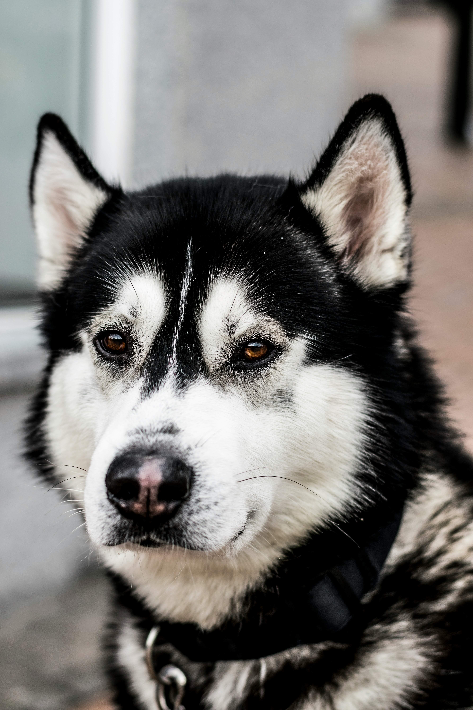
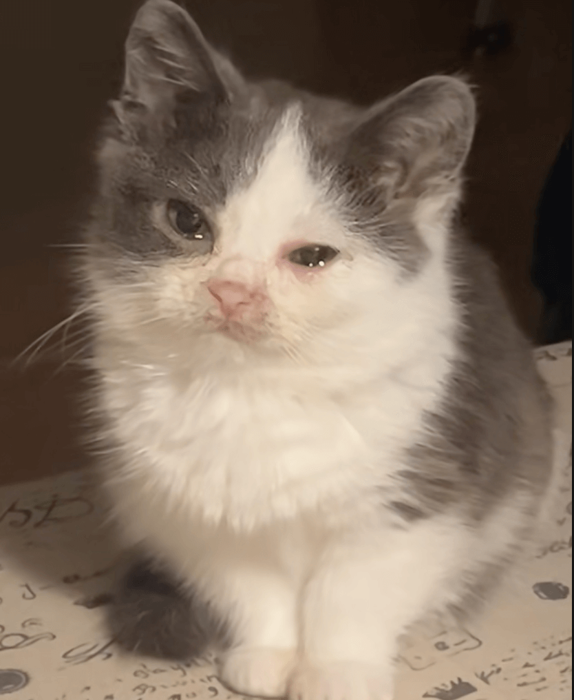

Evcil dostlarımız, hayatımızın en özel parçalarıdır. Onların sağlıklı, mutlu ve uzun bir ömür sürmeleri için güvenilir bir veteriner kliniğine ihtiyaç vardır. Kartopu Veteriner Kliniği olarak amacımız, sadece hastalıkları tedavi etmek değil, aynı zamanda hayvanların yaşam kalitesini yükseltmek ve sahipleriyle birlikte geçirecekleri her günü daha keyifli hale getirmektir. Kliniğimizde modern cihazlar, steril ameliyathaneler ve alanında uzman veteriner hekimler görev yapmaktadır.
Detaylı bilgi için Hizmetlerimiz sayfasına göz atabilir, İletişim bölümünden bizimle kolayca bağlantı kurabilirsiniz.